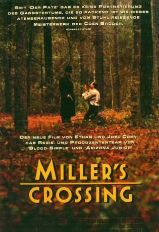

#3971 Miller's Crossing
 gesehen am 08.07.2016
gesehen am 08.07.2016
 
 IMDB-Wertung: 7.9 / 10
IMDB-Wertung: 7.9 / 10  Tomatometer: 91
Tomatometer: 91  Metascore: 0
Metascore: 0 
Eine Stadt irgendwo im Osten der USA: man schreibt das Jahr 1929, die Zeit der Prohibition. Es herrschen raue Sitten, denn die Gangsterbosse sind die eigentlichen Drahtzieher der Stadt. Bürgermeister und Polizeichef tanzen nach der Pfeife des irischen Bandenchefs Leo. Er glaubt, alles unter Kontrolle zu haben. Allerdings weiß er nicht, dass Tom, der zweite Mann der Gang, sich mit seiner Geliebten Verna im Bett vergnügt. Als der rivalisierende italienische Gangsterboss Johnny Caspar den Kopf von Vernas Bruder verlangt, weigert sich Leo. Ein blutiger Bandenkrieg bricht los - und Tom steht plötzlich zwischen allen Fronten.
Jahr: 1990
Dauer: 114 Minuten
FSK: 16
Land: USA Studio: 20th Century FoxTonspuren: DTS - ,
Untertitel: Deutsch,
Auflösung: 1080p (1920x1040) Größe: 8120 MB
Genre: Thriller, Drama, Krimi
Regisseur:  Joel Coen,
Joel Coen,  Ethan Coen
Ethan Coen
Drehbuch: Robert Lewis
Soundtrack:
Darsteller:
 Gabriel Byrne als Tom Reagan
Gabriel Byrne als Tom Reagan Marcia Gay Harden als Verna
Marcia Gay Harden als Verna John Turturro als Bernie Bernbaum
John Turturro als Bernie Bernbaum Jon Polito als Johnny Caspar
Jon Polito als Johnny Caspar J.E. Freeman als Eddie Dane
J.E. Freeman als Eddie Dane Albert Finney als Leo
Albert Finney als Leo Mike Starr als Frankie
Mike Starr als Frankie Steve Buscemi als Mink
Steve Buscemi als Mink Olek Krupa als Tad
Olek Krupa als Tad Michael Jeter als Adolph
Michael Jeter als Adolph John McConnell als Cop - Brian
John McConnell als Cop - Brian- Danny Aiello III als Cop - Delahanty
 Michael Badalucco als Caspar's Driver
Michael Badalucco als Caspar's Driver David Darlow als Lazarre's Messenger
David Darlow als Lazarre's Messenger Sam Raimi als Snickering Gunman
Sam Raimi als Snickering Gunman Sean Collins als Hitman #3 , uncredited
Sean Collins als Hitman #3 , uncredited Frances McDormand als Mayor's Secretary , uncredited
Frances McDormand als Mayor's Secretary , uncredited Al Mancini als Tic-Tac
Al Mancini als Tic-Tac- Richard Woods als Mayor Dale Levander
- Thomas Toner als O'Doole
- Mario Todisco als Clarence Drop Johnson
 Lanny Flaherty als Terry
Lanny Flaherty als Terry- Jeanette Kontomitras als Mrs. Caspar
- Louis Charles Mounicou III als Johnny Caspar, Jr.
- Helen Jolly als Screaming Lady
- Hilda McLean als Landlady
- Monte Starr als Gunman in Leo's House
- Don Picard als Gunman in Leo's House
- Salvatore H. Tornabene als Rug Daniels
- Kevin Dearie als Street Urchin
- Charles Ferrara als Caspar's Butler
- Esteban Fernández als Caspar's Cousin
- George Fernandez als Caspar's Cousin
- Charles Gunning als Hitman at Verna's
- Dave Drinkx als Hitman #2
- Robert LaBrosse als Lazarre's Tough
- Carl Rooney als Lazarre's Tough
- Jack Harris als Man with Pipe Bomb
- Jery Hewitt als Son of Erin
- John Schnauder Jr. als Cop with Bullhorn
- Zolly Levin als Rabbi
- Joey Ancona als Boxer
- Bill Raye als Boxer
- William Preston Robertson als Voice
- Michael P. Cahill als Casino Patron , uncredited
Datei: X:\1990\Miller's Crossing (1990, FSK16, 1920x1040).mkv seit 07.07.2016
Festplatte: HD 1987-1991
 Es gibt insgesamt 52 Filme in der Gruppe '1990'
Es gibt insgesamt 52 Filme in der Gruppe '1990'